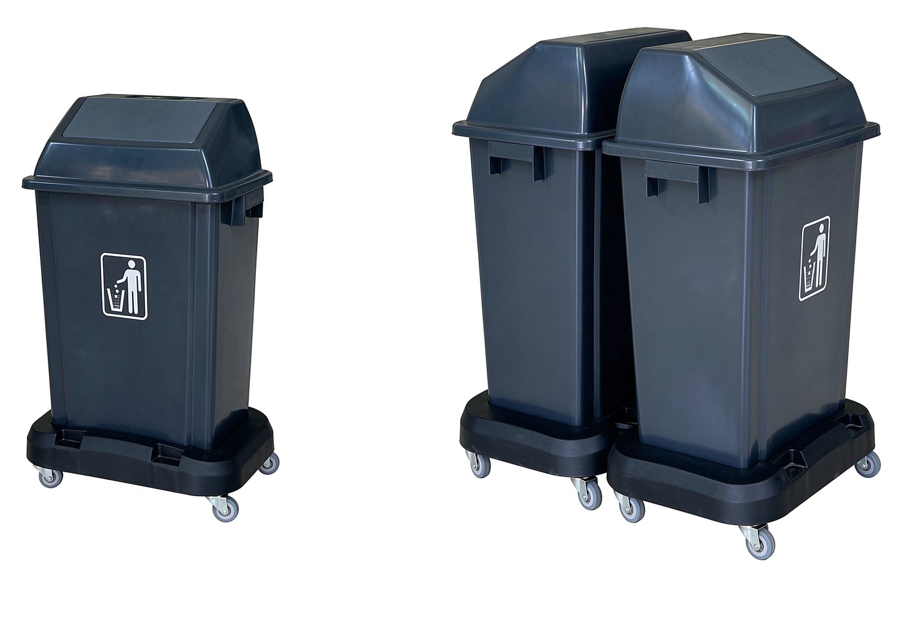

60L/120L Turning Cover Dustbin PTC-101
A turning cover litter bin that rides on its own base platform: the lid tips back under a hand and closes itself, the four castors let one person move a full bin along a corridor, and the same 48 cm body is offered at 60 L for a lobby and 120 L for a concourse or a factory gate. Grey, green, blue and red covers colour-coded waste streams without a second product line.
Key Features
Detailed Specifications
| Model | PTC-101-60 / PTC-101-120 |
|---|---|
| Product type | Turning cover dustbin with a base platform and four castors |
| Capacity | 60 L / 120 L |
| Size | 60 L: 48 × 34 × 81 cm 120 L: 48 × 68 × 81 cm Width × depth × height over the body and closed lid |
| Colours | Grey, green, blue, red |
| Lid | Turning cover; tips back and closes itself |
| Base | Moulded base platform with four swivel castors |
| Body | One-piece moulded HDPE body with a bag rim |
| Packing | 60 L 3 pcs per carton, carton 49 × 34 × 92 cm; 120 L 1 pc per carton, carton size confirmed with your order |
| Application | Hotel lobbies and corridors, airport terminals, factory floors, offices and hospital wards |
Model Codes & Available Sizes
| Capacity | Model turning cover, with base and castors, no colour letter |
|---|---|
| 60 L | PTC-101-60 |
| 120 L | PTC-101-120 |
| Capacity | Size (cm) | Carton size (cm) | Packing | Colours |
|---|---|---|---|---|
| 60 L | 48 × 34 × 81 | 49 × 34 × 92 | 3 pcs/ctn | Grey, green, blue, red |
| 120 L | 48 × 68 × 81 | Confirmed with order | 1 pc/ctn | Grey, green, blue, red |
One code per capacity — the colour is chosen on the order against the same code, so grey, green, blue and red do not create separate model numbers. Sizes are width × depth × height measured over the body with the lid closed; the 120 L shares the 48 cm width of the 60 L and doubles the depth. Carton sizes and MOQ are confirmed when you order, and mixed capacities and colours in one container are accepted.
Product Description
The PTC-101 is the turning cover dustbin that travels: a 60 L or 120 L moulded body standing on its own base platform with four castors. It is the bin for the places where waste is generated away from a fixed point — a hotel corridor during a floor walk, an airport gate area, a factory aisle, a hospital ward — and where a bin that has to be carried is a bin that gets left behind.
The cover is a turning lid, not a pedal: a hand or a tray tips it back, the waste drops in, and the lid returns on its own. That keeps the bag covered in a lobby where the bin is on show, keeps the smell in on a ward, and means there is no pedal linkage to jam under a heavy carton in a factory.
Under the body is a moulded base platform carrying four swivel castors. A full 120 L bin rolls with one hand instead of being dragged across a floor, the wheels take the weight off the operator's back, and the platform raises the body about a hand's width off the ground so a mop pass or a wash-down does not run into the bag. The same platform is what lets a hotel keep one bin per floor and move it to the service lift at the end of a shift.
Both capacities share the 48 cm width; the 120 L is the same bin with a deeper body, so a mixed order of 60 L and 120 L stacks and stores predictably. The four colours — grey, green, blue and red — are moulded into the body, so a site can colour-code general waste, paper, plastic and food waste with one product line, and the colour does not flake off in a wash-down.
Packing and supply: 3 pcs per carton for the 60 L in a 49 × 34 × 92 cm carton, and 1 pc for the 120 L. We ship from Guangzhou and quote EXW, FOB or CIF, run OEM orders with your colour, logo and carton, and quote spare lids, base platforms and castors with the order. Related lines in the same catalogue: the hand free push-top bins PTC-104 and PTC-105, the smaller turning cover bins PTC-102 and PTC-103, classification bins PCL-101, and the full Dustbin range. Tell us the capacity, colour split and destination port, and we reply within one working day.